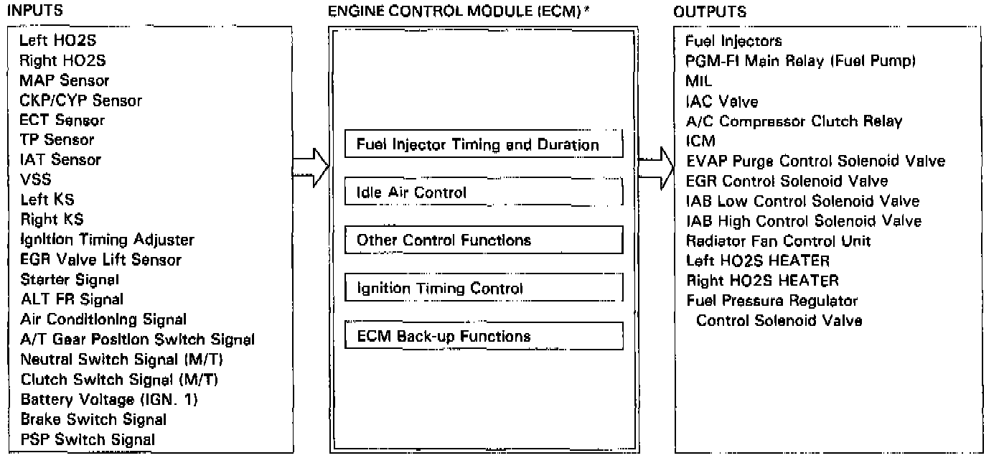

Computers and Control Systems: Description and Operation

* M/T-equipped cars use an Engine Control Module (ECM). A/T-equipped cars use a Powertrain Control Module (PCM), which also controls transmission functions. When working on an A/T-equipped car, all references to ECM in this section actually refer to the PCM.
PGM-FI SYSTEM
The PGM-FI system on this model is a sequential multiport fuel injection system.
FUEL INJECTOR TIMING AND DURATION
The ECM contains memories for the basic discharge durations at various engine speeds and manifold pressures. The basic discharge duration, after being read out from the memory, is further modified by signals sent from various sensors to obtain the final discharge duration.
IDLE AIR CONTROL
Idle Air Control (IAC) Valve
When the engine is cold, the A/C compressor is on, the transmission is in gear (A/T only) or the alternator (ALT) is charging, the ECM controls current to the IAC valve to maintain correct idle speed.
IGNITION TIMING CONTROL
- The ECM* contains memories for basic ignition timing at various engine speeds and manifold pressures. Ignition timing is also adjusted for engine coolant temperature.
- A knock control system is also used. When detonation is detected by the knock sensor (KS), the ignition timing is retarded.
OTHER CONTROL FUNCTIONS
1. Starting Control
When the engine is started, the ECM* provides a rich mixture by increasing fuel injector duration.
2. Fuel Pump Control
- When the ignition switch is initially turned on, the ECM* supplies ground to the PGM-FI main relay that supplies current to the fuel pump for two seconds to pressurize the fuel system.
- When the engine is running, the ECM* supplies ground to the PGM-FI main relay that supplies current to the fuel pump.
- When the engine is not running and the ignition is on, the ECM* cuts ground to the PGM-FI main relay which cuts current to the fuel pump.
3. Fuel Cut-off Control
- During deceleration with the throttle valve closed, current to the fuel injectors is cut off to improve fuel economy at speeds over 1,050 rpm (M/T) or 1,000 rpm (A/T).
- Fuel cut-off action also takes place when engine speed exceeds 6,900 rpm regardless of the position of the throttle valve to protect the engine from over-revving.
4. A/C Compressor Clutch Relay
When the ECM* receives a demand for cooling from the air conditioning system (compressor control unit), it delays the compressor from being energized, and enriches the mixture to assure smooth transition to the A/C mode.
5. Evaporative Emission (EVAP) Purge Control Solenoid Valve
When the engine coolant temperature is below 158°F (70°C) and air conditioner OFF the ECM* supplies a ground to the EVAP purge control solenoid valve which cuts vacuum to the EVAP purge control diaphragm valve.
6. Intake Air Bypass (IAB) Low Control Solenoid Valve, Intake Air Bypass (IAB) High Control Solenoid Valve
When engine speed is below 3,300 rpm, the IAB High Control Solenoid Valve and IAB Low Control Solenoid Valve are activated by a signal from the ECM*. Intake air flows through a long chamber path, increasing torque at low RPM.
When engine speed is 3,400-4,200 rpm, the IAB Low Control Solenoid Valve is deactivated by the ECM*. Intake air flows through a short chamber path, increasing mid-range torque.
When the engine rpm is above 4,300 rpm, the IAB Low Control Solenoid Valve and IAB High Control Solenoid Valve are deactivated by the ECM*. This creates a very short intake path and increases high-speed torque.
7. Exhaust Gas Recirculation (EGR) Control Solenoid Valve
When the EGR is required for control of oxides of nitrogen (NOx) emissions, the ECM supplies ground to the EGR control solenoid valve which supplies regulated vacuum to the EGR valve.
8. Fuel Pressure Regulator Control Solenoid Valve
At engine start, if the engine coolant temperature is above 221°F (105°C) or the intake air temperature is above 192°F (89°C), the Fuel Pressure Regulator Control Solenoid Valve is energized, cutting manifold vacuum to the fuel pressure regulator for about 80 seconds.
ECM FAIL-SAFE/BACK-UP FUNCTIONS
1. Fail-Safe Function
When an abnormality occurs in a signal from a sensor, the ECM ignores that signal and assumes a pre-programmed valve for that sensor that allows the engine to continue to run.
2. Back-up Function
When an abnormality occurs in the ECM* itself, the fuel injectors are controlled by a back-up circuit independent of the system in order to permit minimal driving.
3. Self-diagnosis Function [Malfunction Indicator Lamp (MIL)
When an abnormality occurs in a signal from a sensor, the ECM lights the MIL and stores the Diagnostic Trouble Code (DTC) in erasable memory. When the ignition is initially turned in, the ECM* supplies ground for the MIL for two seconds to check the MIL bulb condition.